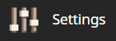
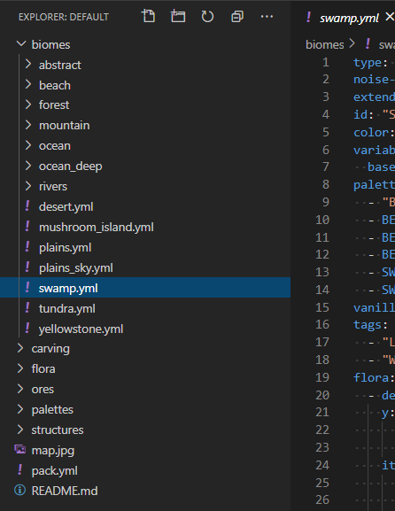

Config Development Introduction¶
This section goes over some general information, and the basic setup preceding actual config pack development.
1. Setting Up Your Test Environment¶
Warning
Do not follow the rest of this guide on any live production environment.
Before beginning development on a new pack, you will need a suitable server or client to test with. We recommend using a Fabric client to develop config packs on, however this choice is ultimately up to you. You can refer to the Getting Started page for instructions on how to get Terra up and running on your desired platform.
Accessing Console¶
Once you have Terra running on your platform of choice, you should ensure you have access to your console. This will be dependent on the platform you’re running Terra on, as well as the launcher or wrapper you start it from. We won’t be covering how to find the console on every platform as that is outside the scope of this guide.
Mojang Minecraft Launcher
1. Start the launcher and navigate to the settings page by clicking on this button in the bottom left:
Enable displaying the output log on game startup here:
A window with the console log will now open when you start Minecraft.
MultiMC Launcher
Open up the MultiMC settings window.
Enable console log display on launch:
A window with the console log will now open when you start Minecraft.
Picking an Editor¶
When developing config packs, an editor will be the main tool you use, so It’s important that you use a suitable one for the job. You’re free to use any editor you’re comfortable with, but we highly suggest using one with the following features:
Syntax Highlighting
Having syntax highlighting in an editor will make understanding and writing configs much easier, as you will be able to tell at a glance how things are structured. To emphasize this point, here is a comparison:
Without Highlighting
With Highlighting
Built In File Explorer
Using a text editor which lets you open entire folders as projects rather than just individual files will make pack development more streamlined and convenient. The ability to quickly swap between configs, view your pack hierarchy at a glance, and manage subdirectories within your text editor is a must if you want to get things done conveniently. This will save you plenty of time not having to manage an external file editor on top of your editor tabs and or instances.
{kind=link}
Recommended Editors¶
2. Locating the Terra Directory¶
You will need to know where the Terra directory is located, as this will be where all the files relevant to config development go:
/config/Terra/
/plugins/Terra/
Subdirectories¶
Within this directory are two subdirectories that you should know about:
Contains all your installed config packs. By default, Terra will come pre-installed
with a config pack under the file name default.zip inside this directory.
Contains all your installed addons. Similarly to the default pack, Terra will also come pre-installed with a set of Core Addons as explained at the beginning of this page.
3. Beginning Config Development¶
From this point on, you have the option of either beginning a new pack from scratch, or modifying an existing pack.
Starting from nothing is a great way to understand what every part of the process entails. You will learn how each part of config development connects together to construct a fully fledged world generator. If you want to make something totally unique and personalized for a server or personal project, or just want to learn how world generation works, we recommend following this guide.
Making changes to an existing pack is a more hands off approach where most of the heavy lifting has been done for you, great for if you just want to tweak a couple small details here and there. This guide won’t explain as much as the ‘from scratch’ guide, so if you’re having difficulties understanding how to make modifications, we recommend following that in addition to this guide.